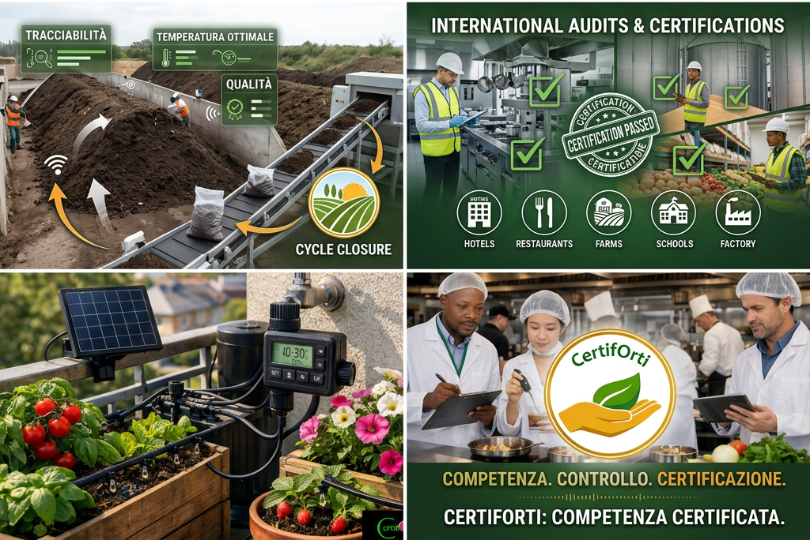
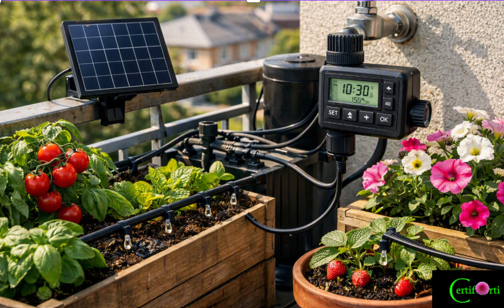
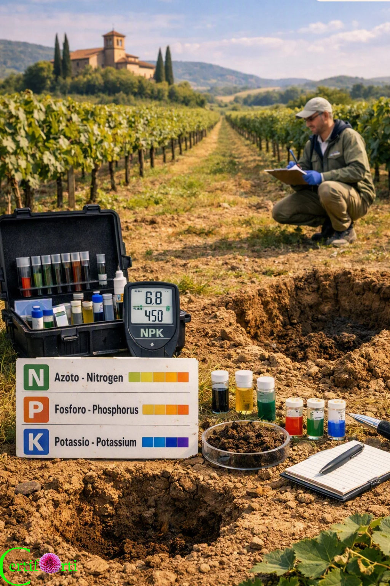
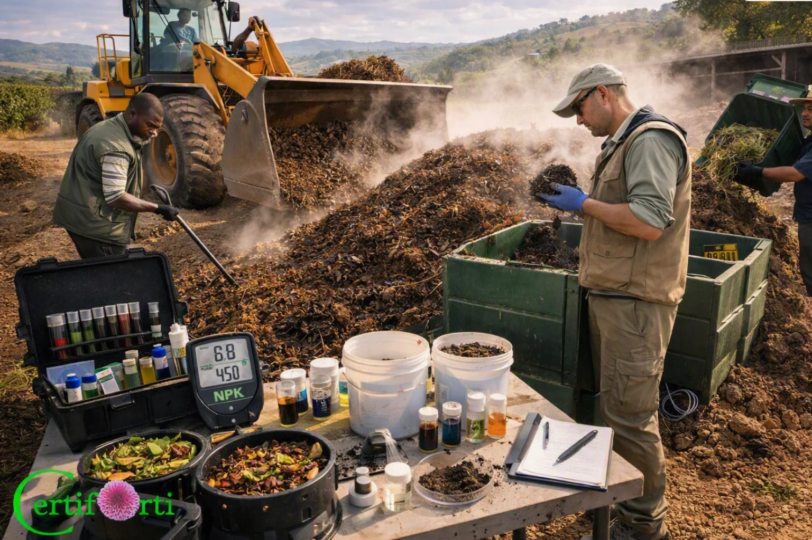
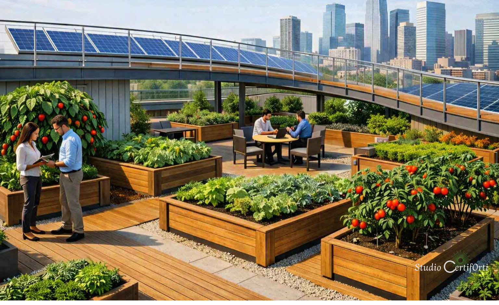
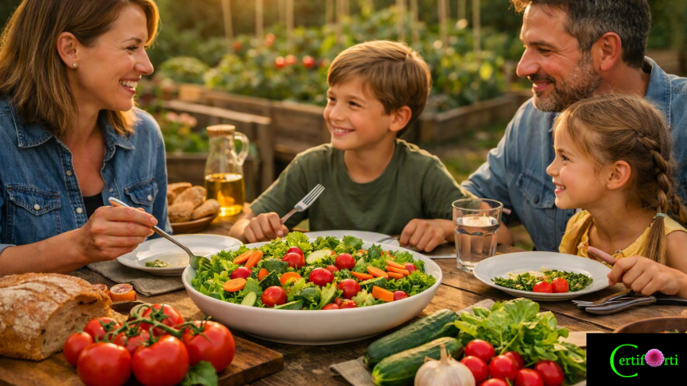

Consulenza ISO, HACCP e Agronomia Rigenerativa per le Filiere Agroalimentari e l'HORECA
Certifichiamo la qualità, blindiamo la sicurezza alimentare e ingegnerizziamo la sostenibilità della tua azienda dal campo alla tavola. Studio CertifOrti è il tuo partner per audit ispettivi qualificati e conformità integrata.
- Consulenza ISO & HACCP: Sicurezza alimentare, audit interni e scudo normativo per superare ogni controllo delle autorità.
- Agronomia Rigenerativa: Ingegnerizzazione del suolo, economia circolare a rifiuto zero e compostaggio biologico.
- Supporto Diagnostico: Analisi agronomiche avanzate e ricette scientifiche basate sulla biodiversità ed ecosistemi resilienti.

Chi Siamo
Studio CertifOrti è un hub d’eccellenza in consulenza scientifica, ingegneristica agronomica e transizione ecologica, specializzato in agronomia urbana biologica rigenerativa, diagnostica sperimentale avanzata e compliance normativa integrata ISO e HACCP.
Operiamo come partner strategico per cooperative agricole, industrie di trasformazione, enti pubblici, istituti scolastici e prestigiosi complessi del settore HORECA. La nostra missione è guidare le organizzazioni pubbliche e private verso modelli reali di economia circolare a rifiuto zero. Traduciamo la sostenibilità ambientale in un vantaggio competitivo solido, tracciabile e protetto da uno scudo normativo totale.
Operiamo come partner strategico per cooperative agricole, industrie di trasformazione, enti pubblici, istituti scolastici e prestigiosi complessi del settore.
La Direzione Scientifica
La Direzione Scientifica di Studio CertifOrti guida la visione metodologica e operativa di tutte le attività di consulenza. Grazie a un approccio multidisciplinare che unisce competenze agronomiche avanzate, chimica del suolo e ingegneria di processo, il nostro team garantisce la conformità normativa e l'eccellenza tecnica per filiere agroalimentari, enti e impianti di produzione.
Il Core Business delle Certificazioni e dell'Auditing Agroalimentare
Siamo specializzati nell'ideazione, implementazione e verifica di sistemi di gestione integrati per la qualità, la sicurezza alimentare e l'impatto ambientale. Attraverso audit tecnici rigorosi, assistiamo le aziende agricole e agroindustriali nel raggiungimento e nel mantenimento degli standard ISO (9001, 14001, 22000) e nella strutturazione di piani HACCP su misura.
CERTIFORTI COMPOST
CERTIFORTI COMPOST rappresenta il nostro vertice tecnologico nell'ambito dell'economia circolare e del recupero della sostanza organica. Ingegnerizziamo processi di compostaggio industriale e biostimolante di alta qualità, trasformando scarti e sottoprodotti in risorse fertili certificate, riducendo l'impronta carbonica e potenziando la resilienza del suolo.
I Nostri Pilastri Strategici
Il nostro operato si fonda su tre principi cardine: Rigore Scientifico in ogni analisi e diagnosi, Sostenibilità Misurabile per garantire un impatto ambientale positivo, e Scudo Normativo per tutelare i nostri clienti durante i controlli ufficiali e le verifiche ispettive.
Studio CertifOrti è un hub d’eccellenza in consulenza scientifica, ingegneristica agronomica e transizione ecologica, specializzato in agronomia urbana biologica rigenerativa, diagnostica sperimentale avanzata e compliance normativa integrata ISO e HACCP.
Operiamo come partner strategico per cooperative agricole, industrie di trasformazione, enti pubblici, istituti scolastici e prestigiosi complessi del settore HORECA. La nostra missione è guidare le organizzazioni pubbliche e private verso modelli reali di economia circolare a rifiuto zero. Traduciamo la sostenibilità ambientale in un vantaggio competitivo solido, tracciabile e protetto da uno scudo normativo totale.
La Direzione Scientifica
Lo Studio è stato fondato e viene diretto da Kokuvi Wolanyo Doulome-Woledzi (Irénée), agronomo, project manager e specialista in sistemi di gestione con un solido background internazionale e oltre un decennio di esperienza sul campo nella direzione di filiere biologiche complesse e reti fino a 1.500 produttori.
- Solide Radici Accademiche: Laurea Triennale in Scienze Agrarie per la Sicurezza Alimentare e Ambientale nei Tropici e Laurea Magistrale in Tropical Rural Development presso l'Università degli Studi di Firenze.
- Massime Qualifiche di Compliance: Auditor/Lead Auditor certificato da WeLearn Srl per gli standard internazionali UNI EN ISO 19011:2018, UNI CEI EN ISO/IEC 17021-1:2015, ISO 22000:2018 (Sicurezza Alimentare) e ISO 9001:2015 (Sistemi di Gestione per la Qualità).
- Competenza Globale: Già Direttore della Certificazione e Responsabile SGSA all'estero, ha coordinato progetti strutturali di sviluppo rurale finanziati da organismi internazionali (quali USAID e Fairtrade Africa), presidiando la tracciabilità e superando rigidi controlli ispettivi per i mercati occidentali.
Il Core Business delle Certificazioni e dell'Auditing Agroalimentare
Grazie alle massime competenze d'organismo e di conduzione di verifiche ispettive secondo la norma UNI EN ISO 19011:2018, lo Studio CertifOrti offre un servizio di alta consulenza direzionale per blindare la sicurezza, la qualità e la tracciabilità delle filiere alimentari attraverso tre pilastri operativi:
-
Ingegnerizzazione del Processo di Autocontrollo HACCP
Non ci limitiamo alla redazione di manuali cartacei standard, ma progettiamo Piani di Autocontrollo HACCP nativi e dinamici, personalizzati sulle geometrie reali di cucine alberghiere, mense e centri di confezionamento.
- Mappatura dei Rischi: Identificazione analitica dei punti critici di controllo (CCP) fisici, chimici e biologici.
- Validazione dei Flussi: Strutturazione della rigida separazione fisica e temporale tra le linee di preparazione degli alimenti, lo stoccaggio delle materie prime e le innovative stazioni di compostaggio circolare interno.
- Formazione Operativa: Addestramento specialistico del personale aziendale sulle buone pratiche igienico-sanitarie (GHP) in conformità alle più recenti disposizioni normative nazionali e regionali.
-
Conduzione di Audit Interni (Prima Parte) e di Filiera (Seconda Parte)
Lo Studio opera come occhio ispettivo qualificato per monitorare la costanza dei risultati qualitativi e mitigare il rischio sanzionatorio:
- Audit Interni di Prima Parte: Verifiche ispettive programmate all'interno dell'organizzazione del cliente per monitorare l'efficacia dei manuali HACCP, la tenuta dei registri e il rispetto dei KPI di processo (es. monitoraggio termico del compost o conformità delle temperature di stoccaggio).
- Audit di Filiera di Seconda Parte (Qualifica Fornitori): Ispezioni condotte per conto di catene HORECA, consorzi o cooperative agricole presso i loro fornitori di materie prime. Verifichiamo i requisiti di tracciabilità all'origine, l'assenza di contaminazioni incrociate e la rispondenza agli standard biologici (Ecocert, Reg. UE 2018/848) o etici (Fairtrade).
-
Accompagnamento e Scudo per gli Audit Esterni (Terza Parte)
Prepariamo le aziende a superare con successo e senza "non conformità" le ispezioni ufficiali condotte dagli Organismi di Certificazione accreditati e dalle Autorità Sanitarie:
- Sistemi di Gestione ISO: Implementazione guidata e mantenimento degli standard ISO 22000:2018 (Sicurezza Alimentare) e ISO 9001:2015 (Qualità).
- Assistenza in Sede di Esame: Affianchiamo la direzione aziendale durante l'audit di terza parte, agendo come interfaccia tecnica e scientifica di fronte ai certificatori esterni.
- Gestione delle Risultanze: In caso di rilievi o gap analitici pregressi, strutturiamo piani di azioni correttive (Root Cause Analysis) rapidi ed efficaci, pronti per essere validati dagli enti ispettivi.
CERTIFORTI COMPOST: Il Nostro Asset di Innovazione Industriale
Il fiore all'occhiello dello Studio è CERTIFORTI COMPOST, una piattaforma integrata di innovazione ambientale, agronomica e digitale finalizzata alla tracciabilità, certificazione e valorizzazione delle biomasse organiche territoriali. Attraverso questo programma industriale di economia circolare, lo Studio offre soluzioni avanzate che uniscono territorio e tecnologia:
- Rete di Compostaggio Diffuso e Hub Centrale: Ingegnerizziamo e monitoriamo sistemi di compostaggio aerobico di prossimità presso grandi conferitori (mense, HORECA, cooperative). Consoliamo le matrici nel nostro Compost Hub territoriale per una stabilizzazione fine e termo-controllata sopra i 55 °C, azzerando odori e insetti.
- Tracciabilità Digitale e IoT: Monitoriamo in tempo reale i parametri critici del processo biologico tramite sensori IoT avanzati (temperatura, umidità, ossigeno) gestiti via sistema SCADA.
- Il Passaporto Digitale del Compost: Ogni lotto di ammendante viene validato dal nostro laboratorio interno ed è accompagnato da un Passaporto Digitale univoco tramite codice QR. Questo documento ne certifica l'origine biologica, il profilo chimico-fisico (rapporto C/N ottimale tra 10 e 15) e l'assenza di contaminanti, in piena conformità con i Regolamenti UE 2018/848 e 2019/1009.
I Nostri Pilastri Strategici
- Valore Intellettuale e Scientifico Puro: Rilasciamo ricette agronomiche scientifiche, analisi GIS e passaporti fitosanitari di progetto, garantendo una consulenza d'alto livello indipendente e focalizzata esclusivamente sul raggiungimento degli obiettivi del committente.
- Ingegnerizzazione dei Processi Economici ed ESG: Sviluppiamo sistemi che trasformano la frazione organica da costo gestionale a risorsa strategica. Aiutiamo i nostri partner a ridurre drasticamente i costi logistici di movimentazione, a generare crediti di ritenzione biologica da Carbon Farming e ad ottenere significativi sgravi fiscali sulla tassa comunale dei rifiuti (TARI).
- Rigore e Sicurezza Operativa (Scudo Normativo): Ogni layout e piano di gestione viene strutturato per mappare preventivamente i rischi ambientali e alimentari. Garantiamo la piena interoperabilità con il Registro Elettronico Nazionale per la Tracciabilità dei Rifiuti (RENTRI), allineando i processi aziendali agli obiettivi europei del Green Deal e della Soil Strategy 2030.
Visione
Portare l’agronomia urbana e rigenerativa al centro delle politiche alimentari, con progetti che uniscono produttività, biodiversità e inclusione sociale.
Metodo
Analisi del suolo, diagnosi agronomica, progettazione integrata e accompagnamento normativo continuo, dalla fase di studio alla certificazione.
Partner
Cooperative agroalimentari, enti pubblici, associazioni, ristorazione collettiva e realtà HORECA che vogliono coniugare qualità, sicurezza e sostenibilità.
Servizi
Offriamo un portafoglio completo di servizi per la progettazione, gestione e certificazione di sistemi agroalimentari urbani e cooperativi.
Team Agronomia Urbana
Progettazione di orti urbani, giardini produttivi e sistemi agroecologici in contesti cittadini, con attenzione a suolo, acqua e biodiversità.
Agronomia rigenerativa
Piani di rigenerazione del suolo, rotazioni colturali, coperture vegetali e pratiche che aumentano fertilità e resilienza degli ecosistemi produttivi.
Supporto diagnostico
Analisi agronomiche e interpretazione dei dati per individuare criticità, definire interventi mirati e monitorare l’evoluzione dei sistemi.
HACCP e sicurezza alimentare
Redazione, revisione e implementazione di piani HACCP per cooperative, laboratori e strutture HORECA, con formazione operativa del personale.
Consulenza ISO per agroalimentare
Accompagnamento verso certificazioni ISO & HACCP (qualità, ambiente, sicurezza alimentare) con focus su filiere cooperative e sistemi urbani.
Progetti ambientali e sostenibilità
Progettazione di interventi agroambientali, piani di sostenibilità e sviluppo di reportistica tecnica per l'accesso a bandi, finanziamenti europei e rendicontazione sociale.
Produzione di compost di qualità certificata
Produzione e gestione diretta del nostro complesso di compostaggio aerobico integrato, sia di prossimità che centralizzato. Una filiera certificata supportata da sistemi avanzati di digitalizzazione e tracciabilità per un compost speciale ad alto valore nutritivo.
Diagnostica nutrizionale e analisi del suolo
Piani di campionamento avanzati, analisi chimico-fisiche del terreno e diagnostica fogliare per definire strategie di nutrizione mirate, prevenire carenze vegetali e ottimizzare la resa delle colture.
Progetti
Alcuni esempi di progetti seguiti da Studio CertifOrti, tra agronomia urbana, rigenerativa e sicurezza alimentare.

Orti urbani cooperativi
Progettazione e gestione di orti urbani condivisi, con cooperative e cittadini, per filiere corte e educazione alimentare.
ISO per filiere HORECA
Percorsi di certificazione ISO & HACCP per realtà HORECA che vogliono valorizzare qualità, sicurezza e sostenibilità dei propri servizi.
Riqualificazione Verde & Filiere
Interventi di riqualificazione ambientale e valorizzazione delle filiere locali.
Progetti Cooperativi
Sviluppo di iniziative e reti cooperative per il territorio.

Diagnostica del Suolo
Disponiamo di strumentazione avanzata per la diagnostica del suolo, essenziale per valutare con precisione le condizioni agronomiche e guidare interventi mirati e sostenibili.

Rigenerazione del suolo urbano
Interventi di rigenerazione del suolo in aree degradate, con tecniche agroecologiche e monitoraggio continuo.
Certificazioni ISO & HACCP
Supportiamo cooperative e strutture HORECA nel percorso verso le principali certificazioni ISO & HACCP, integrando requisiti normativi con pratiche agronomiche sostenibili.
Mantenimento del sistema: Eseguiamo audit interni, riesami della direzione, aggiornamento documentale e formazione continua del personale. Puoi gestire queste attività internamente, se possiedi le competenze necessarie, oppure affidarle interamente al nostro Studio come partner strategico.
ISO 9001 – Qualità
Sistemi di gestione per la qualità orientati a processi agroalimentari cooperativi, con attenzione a tracciabilità e soddisfazione del cliente.
ISO 14001 – Ambiente
Gestione ambientale integrata, con focus su uso del suolo, risorse idriche e impatti delle filiere urbane e cooperative.
ISO 22000 – Sicurezza alimentare
Sistemi di gestione per la sicurezza alimentare che dialogano con HACCP e specificità delle filiere cooperative e HORECA.
ISO 22000 – Sicurezza alimentare
Piano scritto su misura sui tuoi locali, processi e fornitori. Analisi dei pericoli phase-by-phase, CCP, monitoraggi e azioni correttive.
Programmi di Prerequisito (GMP/GHP)
Layout e flussi di lavorazione, pulizia e sanificazione, gestione allergeni, lotta agli infestanti, catena del freddo e potabilità acqua.
Etichettatura (Reg. UE 1169/2011)
Verifica prima della stampa: allergeni, tabella nutrizionale, scadenze, origine e claim per evitare sprechi e sanzioni.
Rintracciabilità e Pratiche Sanitarie
Procedura di ritiro/richiamo (Reg. CE 178/2002), pratiche SUAP, SCIA, notifiche sanitarie e registrazioni (Reg. CE 852/853).
Analisi, Shelf Life e Audit
Piani di campionamento con laboratori accreditati, challenge test per la data di scadenza e ispezioni simulate non annunciate.
Assistenza Controlli e Formazione
Affiancamento durante i controlli ASL/NAS, gestione sicurezza sul lavoro (celle, macchinari) e corsi formazione alimentari con Emmess Learning Hub.
Team
Un team multidisciplinare che unisce agronomia, analisi del suolo, sicurezza alimentare e consulenza normativa.

Team Agronomia Urbana
Progettazione di sistemi produttivi urbani, orti cooperativi e paesaggi commestibili.
Suolo e rigenerazione
Analisi, diagnosi e piani di rigenerazione del suolo per filiere resilienti.

HACCP & ISO
Consulenza normativa, piani HACCP e percorsi di certificazione ISO per cooperative e HORECA.
Preventivi
Raccontaci il tuo progetto: ti risponderemo con una proposta su misura per le tue esigenze agronomiche, ambientali e normative.
Richiedi un preventivo
Contatti
Consulenza ISO, HACCP e Agronomia Rigenerativa per le Filiere Agroalimentari e l'HORECA.
Dati di contatto
Email: studio.certiforti@gmail.com
Telefono: +39 376 018 9521
Sede
Studio CertifOrti
Via Tosco Romagnola 185
56025 Pontedera (PI)
Social
Facebook, Instagram, TikTok, YouTube (Studio CertifOrti)